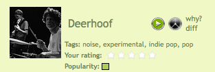
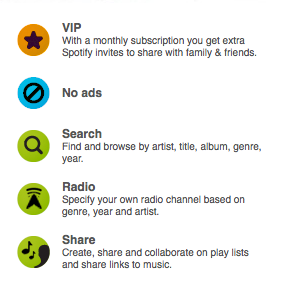

The celestial jukebox arrives - Spotify launches!
Spotify has just announced music licensing deals with Universal, Sony, BMG, EMI Music, Warner Music, Merlin, The Orchard and Bonnier Amigo. With those deals in place, Spotify has gone live. Premium access (advertising-free, paid subscription) is available now (October 7), while free, ad-supported access will be gradually made available over the next few months.
Now the bad news: Unfortunately, for those of us in the states, Spotify is only launching in the UK, Germany, France, Italy, Spain, Finland, Norway and Sweden. No word yet on when they will be launching here.
Spotify is a streaming internet music application that offers on-demand access to a seemingly unlimited amount of music. In some ways, it is like iTunes - you can search and browse for music, create playlists, and play music by any artist with just a click of the mouse. But Spotify is so much better than iTunes since it gives you access to millions of tracks (all perfectly legal). With Spotify you can share playlists with other Spotify users (and they can actually listen to them), you can even create collaborative playlists where multiple users can add tracks to the list. Spotify also offers a Pandora-like radio mode that will give you an infinite playlist of music by similar artists (using AllMusic's artist similarity). You might expect that since Spotify is streaming music over the wire, that it would be slow and cumbersome - but to me, it seems to be as fast or faster than iTunes. When I click on a song, it starts playing immediately - with no stutters or drop outs (well except for that time when my wireless router was dying).
In addition to the excellent music client, there's a lot of cool stuff going on in the Spotify back room as well.  Every item (artists, tracks, albums and playlists) in Spotify has a URL associated with it. This makes it easy not only to share music but for third parties to build applications that use Spotify as the music engine. (We've done that here in the Labs with our Music Explaura - when you click on the little green play button you are playing music in Spotify). Spotify also provides web services to allow 3rd parties the ability to search the Spotify catalog for artists and tracks and resolve them to Spotify URLs.
The premium subscription costs £10 per month or £100 per year in the UK. It comes with these attributes:

(Note that the premium subscription comes with two beta invites, so if you live in the USA, it is time to make a European friend). Spotify is also offering a day pass - (£1 per day) for when you are planning that romantic dinner and you don't have enough Barry White to get you through the night.
I've written about Spotify a few times already. Since then, the Spotify team has added lots of new features. For instance, there's now a 'What's New' tab that highlights music that has been recently added to the catalog, along with some artist recommendations:

They've also added a zeitgeist page that shows you what is popular on Spotify (or just what's been popular for you).
Spotify is the closest thing there is to the celestial jukebox - with (nearly) all music available on demand. I'm really excited to see where the Spotify team takes this. Congrats to the Spotify team for releasing such a great music app - (but don't spend too much time resting on your laurels - get back to work on those pesky music deals so that Spotify can be released in the U.S.!)

{kind=link}
{kind=link}
Even though it has a massive music library it really lacks where it hurts the most.
Not much from Iron Maiden, Metallica, Red Hot Chili Peppers, R.E.M., Green Day, Oasis and so on are there, just a few older albums (in Metallicas case only the newest albums except Death Magnetic), and/or some tracks from different compilation albums.
I'm ditching this until I see my favourites in full and not only parts...
I'd love it if I was able to integrate it with my iTunes library, giving me access to both offline files and online streaming to complete the experience.
Posted by Johan Bogg on October 08, 2008 at 10:41 AM EDT #
Where do you live? Could be differences for the moment regarding where you live. I live in Sweden and I have all the albums from the artists.
Posted by Martin on October 09, 2008 at 06:24 PM EDT #
REM has 787 songs on Spotify. Including their latest album Accelerate (released 2008) and rem live (released 2007). Green Day 252 songs, Oasis 414 songs. And I know thats counting different releases of the same song, so the numbers do not always reflect the number of actual albums available (but they do have almost the whole R.E.M discography). There are albums missing but I think its because these artists are such top sellers anyway so it may be difficult for Spotify to get them on their service at the moment (but when the amount o Spotify users grow I think that will change)
I still think they have an amazing amount of music of the biggest artists.They have more or less everything ever released (including their absolute latest releases!) with artists like. Bob Dylan, David Bowie, Bruce Springsteen, Madonna, U2,Coldplay, Neil Young and a lot of other big names .But for me the true joy of Spotify is finding new bands and songs that you never heard of (or ever had the time to explore before). So while everything may not be absolutely 100% perfect yet, I still think the service is an astonishing accomplishment by the guys and girls at Spotify.
Posted by Peter on October 09, 2008 at 09:30 PM EDT #
Have you guys tried sharing your spotify playlists on SpotifyFriends.com?
Posted by Ivan on October 10, 2008 at 07:50 PM EDT #
Spotify is an incredible product. It sound quality and its speed has no equal in the market at the moment.
Posted by Luis on November 09, 2008 at 06:37 AM EST #
Hi,
I have invites for Spotify available. Just pop over to jameskilgourblog.com and leave a comment on my review of Spotify.
JK
Posted by James Kilgour on November 23, 2008 at 04:31 AM EST #